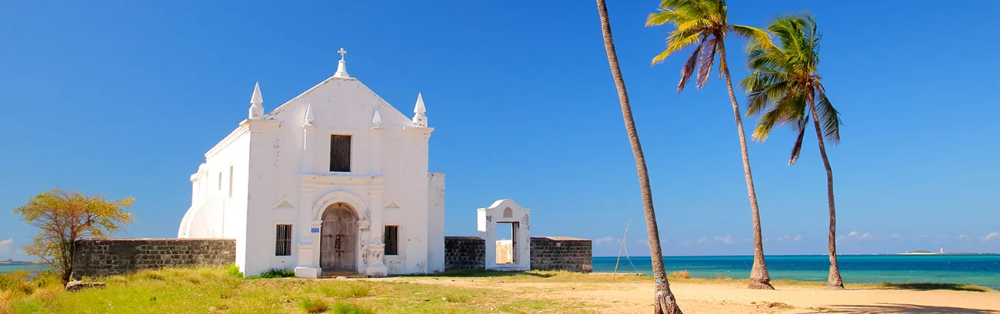

About Mozambique
Mozambique has both a long history of inhabitation and coastal exposure to the Indian Ocean in southeastern Africa. Its culture derives from a mix of African, Arab, Portuguese heritage, and is known for rich cultural displays as well as having an array of beach recreation, seafood, and music to offer.
The capital of Mozambique is Maputo, and Mozambique is well known internationally for their beaches, seafood and lively music.
Weather
Temperature: 8 °C
Wind Speed: 12 km/h
Wind Chill: